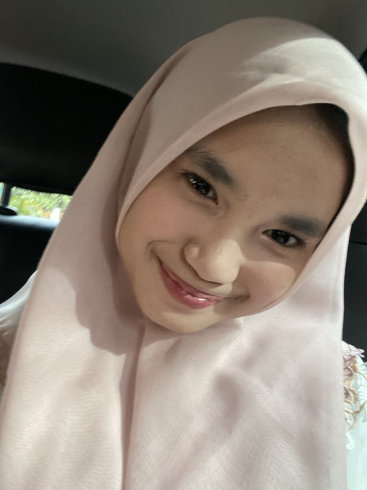

✨ IT'S ME! ✨
Hai! Nama aku Aurellia Azania Achmad dari kelas 9 An Nasr. Saat ini aku lagi berjuang menyelesaikan Ujian Praktik di SMPIT Al Haraki.
Aku merupakan anak kedua dari tiga bersaudara dan merupakan anak perempuan satu satunya, aku sangat menyukai semua makanan manis dan suka mendengarkan musik serta aku mempunya les tennis dan les mandarin. aku merupakan murid yang suka bersosialisasi dan bermain bersama teman temanku. overachiever
Aku punya minat besar terhadap ilmu kesehatan, aku berbakat dalam bidang kepemimpinan dan sudah menjadi ketua organisasi bidang kesehatan.
Ke depannya, aku bermimpi buat menjadi dokter kecantikan. Harapanku adalah bisa terus berkembang dan membanggakan orang-orang di sekitarku. ✨